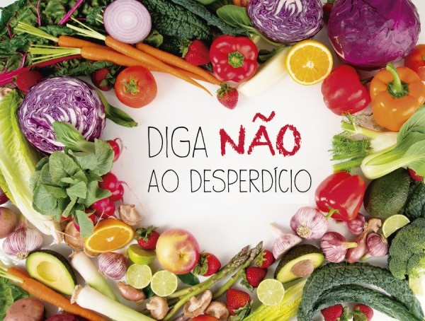

Sobre esse site.

Este site, é um projeto criado na disciplina de Projeto Integrador IV do curso de Licenciatura em Informática no IFPI - Campus Zona Sul. Trazemos informações sobre o desperdício de alimentos com fatos e dados, além de dicas e receitas para ajudar a evitar o desperdício. Os responsáveis pela criação do projeto são: Anna Beatriz, Autobele Silva, Cleyson Lima, Juan Pablo, Francisco Rômulo e os professores orientadores Dr. Stephenson Galvão e Me. Jeanne Leite.